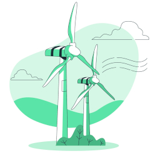

Bons sites para procurar imagens:
unsplash, pexels, freepik, rawpixel, pixabay, libreshot, wikimedia commons
Aqui vai aparecer uma imagem que está na mesma pasta
Também podemos carregar imagens externas através de seu link: (codigo comentado)
Um bom site para encontrar icones:
https://iconarchive.com/
https://app.streamlinehq.com/icons/pixel
Podemos trocar o favicon na tag head, na tag link:favicon